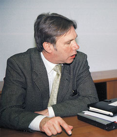

|  | В конце января во время своего визита в Москву Роб Тэнсли, директор по продажам компании Siemon (http://www.siemon.com) по региону EMEA, посетил офис своего российского дистрибьютора - Группы компаний ICS (http://www.intelbuild.ru). В беседе с главным редактором телекоммуникационной редакции "СК Пресс" Ростиславом Сергеевым он рассказал об основных итогах работы и планах на будущее. |
"BYTE/Россия": Какова основная цель Вашего визита?
Роб Тэнсли: Приехал повидать партнеров, соскучился! А если серьезно, то основная цель - согласовать планы на 2003 г. Конечно, мы обсудили и результаты 2002 г., но основное время посвятили планам на текущий год. Разработали общую стратегию, продумали, какие семинары и партнерские встречи будем проводить, в каких выставках будем участвовать.
На 2003 г. у нас запланированы большие события: компания Siemon празднует свое столетие, это семейный бизнес, и сейчас его ведет уже четвертое поколение Симонов. Производство телекоммуникационных компонентов началось в 1906 г., так что фирма - один из старожилов этой индустрии. А ведь статистика свидетельствует, что до четвертого поколения доживает только 3% от общего количества компаний. В честь юбилея мы обновили логотип и уже начали отмечать сотую годовщину в США, в частности, на международной конференции ассоциации BICSI, которая недавно проходила в Орландо (шт. Флорида). В течение года по всему миру, в том числе и в России, пройдет множество различных мероприятий, связанных с этим событием. В конце апреля в США состоится торжественный VIP-прием, на который от ICS приглашен ее президент Юрий Королев.
"BYTE/Россия": Каковы позиции компании Siemon на мировом и европейском рынке кабельных систем, и какое место занимает компания ICS в бизнесе Siemon?
Р. Т.: По размерам годового оборота в США наша компания занимает 2-е или 3-е место на рынке структурированных кабельных систем (СКС). В Европе картина другая. В Старом Свете наша доля намного меньше, возможно, около 3% общеевропейского рынка. По нашим оценкам, его объем составляет примерно 1,2-1,5 млрд долл. Последние годы наша компания уделяет большое внимание глобализации своего бизнеса, и в этом плане один из самых важных пунктов (и моя главная задача) - увеличение доли Siemon на европейском рынке СКС.
Мы работаем уже сто лет, но в Европу пришли только десять лет назад. Из них более восьми мы работаем с ICS. Это один из наших первых партнеров в Европе, и по объему бизнеса он занимает второе или третье место по Европе в целом. Подчеркиваю, не в Восточной Европе, а по Европе в целом. Если в Великобритании наша доля постоянна и за последний год даже слегка уменьшилась, то в России прирост составляет 10-12%. В регионе EMEA (Европа, Ближний Восток и Африка) за это время оборот увеличился только на Ближнем Востоке. Там тоже наблюдается стабильный рост, но в России перспективы еще лучше.
"BYTE/Россия": Как Siemon позиционирует свою продукцию по цене, качеству и другим параметрам?
Р. Т.: Siemon - лидер в высокотехнологичном секторе, двигатель рынка. Цены лежат в диапазоне от средних до высоких, в зависимости от вида продуктов, но в целом мы по этому показателю вплотную приближаемся к компании Avaya, занимающей первое место на рынке СКС. Мы предлагаем не только качество, но и передовые технологии, поддержку, системную гарантию, наша торговая марка хорошо известна. Наверное, наш имидж можно сравнить с узнаваемостью и престижностью автомобилей марки BMW.
"BYTE/Россия": Каково сейчас соотношение продаж СКС категорий 5е и 6?
Р. Т.: На долю категории 6 приходится от 10 до 15% продаж, но она продолжает расти, буквально с каждым днем и каждым проектом. В 2003 г. мы ожидаем увеличения до 25-30%, если не больше. СКС категории 6 сейчас становятся фокусным продуктом, потому что 5е - это уже вчерашний день. Тот, кто сейчас задумывается о новых проектах, должен думать только о категории 6. Она уже официально стандартизована, так что будущее за ней. Ну и за категорией 7, конечно.
"BYTE/Россия": А что вы можете сказать по поводу продукции более высокой категории, чем 6?
Р. Т.: Вы имеете в виду семейство 6u (Ultra 6)? Да, мы создали такую линейку, но пока она предлагается только в США. Для нее производится кабель с характеристиками, превышающими требования категории 6. Ultra 6 пока не поставляется в Европу, потому что, на наш взгляд, европейскому рынку сейчас более чем достаточно обычной категории 6. Но если кому-то понадобится - нет проблем, привезем и компоненты, и кабель из США.
"BYTE/Россия": Каков частотный диапазон у этой продукции?
Р. Т.: До 350 МГц выдерживается положительное соотношение сигнал/шум (ACR).
"BYTE/Россия": А что происходит на более высоких частотах?
Р. Т.: Там уже начинается область категории 7. Учтите, что для измерений на таких частотах необходимо более совершенное оборудование, поскольку распространенные сейчас тестеры, как правило, не способны работать на частотах выше 300-350 МГц.
"BYTE/Россия": Какие еще интересные новые продукты скоро появятся?
Р. Т.: Пожалуй, самое серьезное новшество - это категория 7. Кроме того, для уже существующих продуктов в ноябре были выпущены экранированные модули категории 6, и теперь это семейство стало полным.
Все большее внимание мы уделяем оптике, в особенности в расчете на рост 10-гигабитных приложений в магистрали и гигабитных - в горизонтальной проводке. Будущее все-таки за оптикой.
Еще можно упомянуть продукцию для индустриального использования - в частности, промышленные коннекторы IMAX. Они сертифицированы по классу защиты IP 67. Насколько я помню, испытания по этому классу защиты проводятся на глубине 3 м под водой в течение 24 ч. Промышленные коннекторы могут быть и категории 5е, и категории 6. Сейчас ведется работа над выпуском промышленных оптических разъемов. Внутри промышленного корпуса будут размещены оптические коннекторы LC.
"BYTE/Россия": А насколько в мире, в том числе и в России, популярны такие решения?
Р. Т.: Их популярность не зависит от страны. Везде есть фабрики, заводы, больницы, транспортные предприятия. Так что подобная продукция будет востребована. Я не знаю, насколько велик будет спрос, мы пока только начинаем. Siemon, как всегда, приходит первым и протаптывает дорожку, а остальные фирмы, возможно, тоже подключатся и продолжат.
"BYTE/Россия": Эта продукция сертифицирована в России?
Р. Т.: На данный момент нет, пока еще рано. Но во всех странах мы обязательно сертифицируем свою продукцию.
"BYTE/Россия": Не могли бы Вы прояснить ситуацию с кабелем марки Siemon, как медным, так и волоконно-оптическим? В чем необходимость его использования и кто его, собственно, производит?
Р. Т.: Это вопрос качества. У нас есть ряд партнеров - доверенных производителей кабеля. Это не означает, что они берут свой обычный кабель и просто ставят на нем слово Siemon. Они следуют строгим спецификациям, разработанным нашими специалистами на основе тщательного сбора и анализа данных по разным объектам. Мы очень строго подходим к выбору таких партнеров и постоянно контролируем качество произведенного для нас кабеля. Поэтому кабель марки Siemon и кабель собственной марки доверенного производителя - разные продукты. Требования, предъявляемые к кабелям Siemon, гораздо выше обычных, поэтому при его использовании в составе СКС достигаются лучшие характеристики, чем с кабелем других марок.
"BYTE/Россия": Планирует ли Siemon производить свои компоненты в России? На данный момент, насколько мне известно, все коммутационное оборудование выпускается только на территории США. Не возникают ли проблемы с доставкой продукции из США по всему миру, со сроками поставок?
Р. Т.: Проблем с доставкой нет, потому что хорошо работает система складов. Глобальных складов у нас три: в США, Великобритании и Гонконге. Склад в Великобритании обеспечивает всем необходимым Россию, Ближний Восток и Африку. Азию и Тихоокеанский регион обеспечивает склад в Гонконге, обе Америки - склад в США. А нужды местных рынков в каждой стране удовлетворяют склады наших дистрибьюторов. Любой продукт поставляется в период до 20 рабочих дней, но обычно это происходит гораздо быстрее.
"BYTE/Россия": И, наконец, последний вопрос - об изменениях в программах поддержки партнеров CI (Certified Installer) и DLI (Distributor Listed Installer). Станут ли они ближе по содержанию?
Р. Т.: Если вы спрашиваете, не сольются ли эти программы в одну, то такого не произойдет, программы разные и поддерживаться будут обе, как и раньше. А если вас интересуют изменения в программе DLI, о которых уже сообщала компания ICS, то я могу их подтвердить: партнеры DLI теперь могут устанавливать системы категории 6 и волоконно-оптические СКС. Это большой шаг вперед для DLI. Но между двумя программами по-прежнему остается большая разница: DLI обеспечивает только расширенную гарантию на компоненты, в то время как CI - на компоненты, кабель, систему и работу приложений.